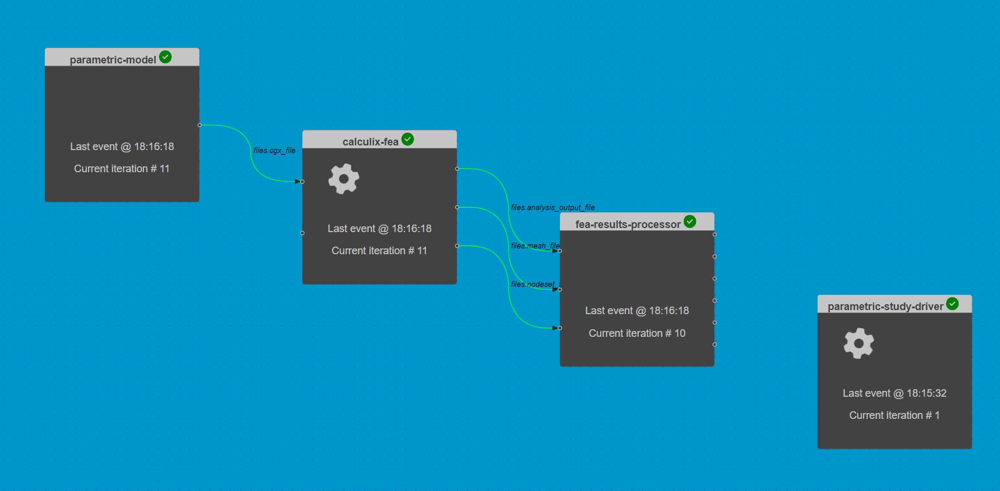
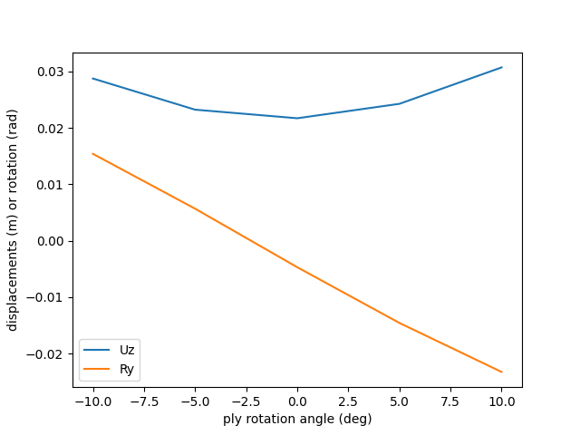

4. 自动化复材机翼模型参数研究#
 加载教程到dapta应用程序
加载教程到dapta应用程序 在Github中查看文件
在Github中查看文件预计时间：15分钟
驱动程序组件可用于自动化复杂分析工作流程。
在本教程中，我们使用前面示例中的链式组件分析来自动执行参数研究。
{kind=link}
4.1. 打开已保存的会话#
首先，加载之前示例的会话文件。
从界面控件中选择打开以加载我们先前会话的JSON格式版本（dapta_input.json）。
或者，将下面的JSON对象复制到文本编辑器中并在本地保存，然后选择打开以加载它。
工作区中应该会出现三个连接的组件。
dapta_input.json
{
"components": [
{
"name": "parametric-model",
"api": "generic-python3-comp:latest",
"options": {},
"parameters": {
"user_input_files": [],
"span": 2.0,
"chord": 0.2,
"filled_sections_flags": false,
"airfoil_csv_file": "naca0012.csv",
"nele_foil": [
10,
10
],
"nele_span": 40,
"node_merge_tol": 0.002,
"cgx_ele_type": 10,
"cgx_solver": "abq",
"boundary_conditions": {
"fix_lines": [
0,
1
],
"loaded_lines": [
5,
6
]
}
},
"outputs": {
"files.cgx_file": "default"
}
},
{
"name": "calculix-fea",
"api": "calculix-fea-comp:latest",
"options": {},
"parameters": {
"user_input_files": [],
"analysis_file": "ccx_static_tip_shear.inp",
"mesh_file": "all.msh",
"filled_sections_flags": false,
"shell_set_name": {
"aero": "Eall"
},
"composite_plies": [
{
"id": "p_0",
"thickness": 0.0002,
"material": "EL",
"orientation": "ORI_0"
},
{
"id": "p_90",
"thickness": 0.0002,
"material": "EL",
"orientation": "ORI_90"
}
],
"orientations": [
{
"id": "ORI_0",
"1": [
0.0,
1.0,
0.0
],
"2": [
-1.0,
0.0,
0.0
]
},
{
"id": "ORI_90",
"1": [
1.0,
0.0,
0.0
],
"2": [
0.0,
1.0,
0.0
]
}
],
"composite_layup": {
"aero": [
"p_90",
"p_0",
"p_0",
"p_0",
"p_90",
"p_90",
"p_0",
"p_0",
"p_0",
"p_90"
]
},
"composite_props_file": "composite_shell.inp"
},
"inputs": {
"files.cgx_file": "default",
"fibre_rotation_angle.ORI_0.1": 0.0
},
"outputs": {
"files.analysis_output_file": "default",
"files.mesh_file": "default",
"files.nodeset_file": "default"
}
},
{
"name": "fea-results-processor",
"api": "generic-python3-comp:latest",
"options": {},
"parameters": {
"user_input_files": [],
"Ux": 0.0,
"Uy": 0.0,
"Uz": 0.0,
"Rx": 0.0,
"Ry": 0.0,
"Rz": 0.0
},
"inputs": {
"files.analysis_output_file": "default",
"files.mesh_file": "default",
"files.nodeset_file": "default"
},
"outputs": {
"Ux": "default",
"Uy": "default",
"Uz": "default",
"Rx": "default",
"Ry": "default",
"Rz": "default"
}
}
],
"connections": [
{
"origin": "parametric-model",
"name_origin": "files.cgx_file",
"target": "calculix-fea",
"name_target": "files.cgx_file",
"type": "implicit"
},
{
"origin": "calculix-fea",
"name_origin": "files.analysis_output_file",
"target": "fea-results-processor",
"name_target": "files.analysis_output_file",
"type": "implicit"
},
{
"origin": "calculix-fea",
"name_origin": "files.mesh_file",
"target": "fea-results-processor",
"name_target": "files.mesh_file",
"type": "implicit"
},
{
"origin": "calculix-fea",
"name_origin": "files.nodeset_file",
"target": "fea-results-processor",
"name_target": "files.nodeset_file",
"type": "implicit"
}
],
"workflow": {
"start": "parametric-model",
"end": "fea-results-processor"
}
}
组件名称旁边的问号表示它们缺少一些数据。要完全定义它们，我们需要上传所有组件的setup.py，compute.py，requirements.txt和用户输入文件，正如之前的示例所述。
以下是链接组件分析示例文件内容的快速链接：
上传文件后，请检查所有组件是否有效。在工作区中，组件名称旁应显示绿色勾号。
4.2. 自动化一个参数研究#
改变复合材料的属性对翼尖挠度的影响是什么？
为了回答这个问题，我们可以进行一个参数研究。 我们针对一系列复合材料属性输入执行链接分析，并记录输出的平均翼尖挠度和转角。 此示例基于参考文献 1中的纯Python实现。
4.2.1. 驱动程序组件#
感兴趣的设计变量是calculix-fea输入变量fibre_rotation_angle.ORI_0.1，我们之前将它设置为零（纤维与翼展方向对齐）。驱动程序compute.py函数必须执行以下任务：
在一系列变量值上进行迭代，变量取值范围通过组件
参数选项卡中的rotation_min（-10度）到rotation_max（10度）的值来定义，并设置增量rotation_inc（5度）；在每次迭代中，调用
run_workflow函数以使用当前变量值执行链接的组件分析；最后，绘图函数(
_plot_study_results)生成翼尖挠度作为变量值函数的线性图。
Note
请注意，即使输入不变，参数模型组件在每个工作流迭代中都会被执行。为了减少与此组件相关的计算量，
我们可以将参数模型计算函数逻辑移动到设置函数中，该函数仅执行一次。
创建驱动组件的方法如下：
在工作区中单击右键，选择
添加空节点。选择空组件并进行编辑。在
属性选项卡中，填写组件名称为parametric-study-driver，并选择组件APIgeneric-python3-driver:latest。从以下文件中复制
setup.py、compute.py、requirements.txt文件的内容到文本编辑器中， 然后在属性选项卡下上传它们。在
属性选项卡中，勾选驱动程序选项的复选框。将下面的参数JSON对象的内容复制到
参数选项卡文本框中。选择
保存数据保存并关闭组件。
from datetime import datetime
from pathlib import Path
def setup(
inputs: dict = {"design": {}, "implicit": {}, "setup": {}},
outputs: dict = {"design": {}, "implicit": {}, "setup": {}},
parameters: dict = {
"user_input_files": [],
"inputs_folder_path": "",
"outputs_folder_path": "",
},
) -> dict:
"""Editable setup function."""
message = f"{datetime.now().strftime('%Y%m%d-%H%M%S')}: Setup completed."
return {"message": message}
from datetime import datetime
from pathlib import Path
from component_api2 import call_compute
import matplotlib.pyplot as plt
def compute(
inputs: dict = {"design": {}, "implicit": {}, "setup": {}},
outputs: dict = {"design": {}, "implicit": {}, "setup": {}},
partials: dict = {},
options: dict = {},
parameters: dict = {
"user_input_files": [],
"inputs_folder_path": "",
"outputs_folder_path": "",
},
) -> dict:
"""Editable compute function."""
workflow = parameters["workflow"]
component_inputs = parameters["component_inputs"] # note: params not accessible
run_folder = Path(parameters["outputs_folder_path"])
study_results = []
parameter_values = []
rotation_min = float(parameters["rotation_min"])
rotation_inc = float(parameters["rotation_inc"])
rotation_max = float(parameters["rotation_max"])
if "calculix-fea" in component_inputs:
rotation = rotation_min
while rotation <= rotation_max:
# update rotation input variable
component_inputs["calculix-fea"]["fibre_rotation_angle.ORI_0.1"] = rotation
(msg, output) = run_workflow(workflow, component_inputs)
if not "outputs" in output:
raise ValueError(
"Cannot find 'output' dictionary in run_workflow output."
)
study_results.append(output["outputs"]["design"])
parameter_values.append(rotation)
rotation += rotation_inc
_plot_study_results(
study_results,
x=parameter_values,
y=["Uz", "Ry"],
saveas=str(run_folder / "results_plot"),
)
else:
(msg, output) = run_workflow(workflow, component_inputs)
print("Parametric study completed.")
message = f"{datetime.now().strftime('%Y%m%d-%H%M%S')}: {msg}"
print(message)
return {"message": message}
def run_workflow(workflow, component_inputs):
"""Execute the workflow components in the same way the Orchestrator would do."""
msgs = ""
for component in workflow:
indict = {
"component": component,
"get_grads": False,
"get_outputs": True,
}
if component in component_inputs:
indict["inputs"] = {
"design": component_inputs[component],
"implicit": {},
"setup": {},
}
(msg, output) = call_compute(indict)
print(msg)
msgs += msg + "\n"
# only return the last output captured
return (msgs, output)
def _plot_study_results(
output: list, # list of dictionaries
x: list, # x-values
y: list, # key of y-values
xlabel="ply rotation angle (deg)",
ylabel="displacements (m) or rotation (rad)",
saveas=None,
):
y_series = []
for result in output:
if len(y) == 1 and isinstance(result[y[0]], list):
if len(output) > 1:
y_series.append(result[y[0]])
else:
y_series = result[y[0]]
else:
y_series.append([result[label] for label in y])
lineObjects = plt.plot(x, y_series)
plt.xlabel(xlabel)
plt.ylabel(ylabel)
plt.legend(iter(lineObjects), y)
if saveas:
plt.savefig(saveas + ".png")
plt.savefig(saveas + ".pdf")
plt.show()
return {
"x_label": "rotation_angles",
"x_values": x,
"y_labels": y,
"y_values": y_series,
}
matplotlib==3.7.0
{
"component_inputs": {
"calculix-fea": {
"fibre_rotation_angle.ORI_0.1": 0
}
},
"driver": {
"type": "custom"
},
"rotation_inc": 5,
"rotation_max": 10,
"rotation_min": -10,
"user_input_files": []
}
4.2.2. 执行工作流程#
现在我们可以通过在运行控件界面中选择【运行】符号 ▶ 来执行参数研究。
一旦运行开始，每个组件将会被设置和依次执行。设置顺序是任意的， 但计算函数将始终从【开始节点】到【结束节点】执行（有关详细信息，请参阅控制面板参考部分）。
运行应在连接组件的5次迭代（或parametric-study-driver组件的1次迭代）后完成。
4.2.3. 检查输出#
运行日志总结了组件的输出。通过在界面控件中选择查看日志来打开日志。
我们可以看到每个组件的计算函数都执行了5次。【un_output】（在日志末尾）仅列出了第5个工作流迭代的计算输出信息。
接下来，关闭运行日志，选择parametric-study-driver组件。然后选择日志选项卡，单击下载文件快照。
参数研究的输出被总结在【outputs】文件夹中的【results_plot.png】和【results_plot.png】图表。
{kind=link}
4.3. 清理#
通过选择界面中的创建来删除您的会话，可能需要一分钟左右在云端重置会话。